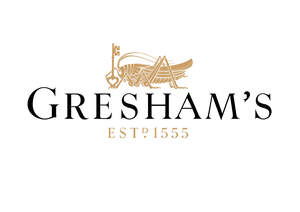
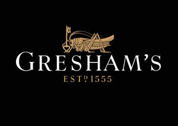

Trade Mark Journal No.2025/050 12 December 2025
UK00004284490 27 October 2025 (9,16,25,35,36,39,41,43)
Mark 1

Mark 2

- Class 9
- Downloadable electronic publications; downloadable electronic publications relating to education and training; downloadable electronic instructional and teaching material.
- Class 16
- Printed matter; printed publications; instructional and teaching materials; educational materials for use in teaching; journals; magazines [periodicals]; stationery; books; calendars; pictures; photographs [printed]; photograph albums; printed timetables; manuals [handbooks]; flyers; note books; cards; document files [stationery]; loose-leaf binders; writing instruments; pens [office stationery]; pencils; certificates; brochures; pamphlets; leaflets; guides; maps; exercise books; lever arch files; document folders and wallets; publicity materials; posters; postcards; advertising materials and display materials; school yearbooks; year planners.
- Class 25
- Clothing; footwear, headgear; scarves; school uniform; sportswear; ties.
- Class 35
- Providing academic course administration services for academic institutions; publication of publicity leaflets and text; dissemination of advertising material and matter; information and advisory services relating to all the aforesaid services.
- Class 36
- Providing educational scholarships.
- Class 39
- Transportation services; coach transportation services; bus transport; transportation of passengers by minibus.
- Class 41
- Boarding schools; preparatory schools; nursery school services; school services; education; education services; educational examination services; provision of educational examination facilities; tuition; academic mentoring of school age children; physical education instruction; sporting education services; provision of sports and recreational facilities; organisation of competitions [education or entertainment]; organisation of sports competitions; coaching [training]; sport camp services; publication of texts; arranging musical and theatrical events; provision of facilities for musical and theatrical events; arranging and conducting conferences, seminars and exhibitions; providing of training; provision of educational courses; publication of printed matter and printed publications; the provision of on-line electronic publications; tutoring; organisation and arranging of lectures, seminars and exhibitions; recreational, sporting and cultural activities; library services; education academies; arranging and conducting of workshops (training); coaching (training); provision and operation of sporting and recreational facilities; career development services; information, advisory and consultancy services relating to these services; dissemination of educational material; publication of educational materials; production and rental of educational and instructional materials; development of educational materials; summer camps [entertainment and education]; Organisation of entertainment and cultural activities for summer camps; training of teachers; organisation of alumni events; organisation of entertainment events; organisation of educational events and education symposia.
- Class 43
- Provision of before-school care; provision of after-school care; day-nursery [crèche] services; services for providing food and drinks; catering; catering services for educational establishments; providing facilities for exhibitions, conventions, conferences and meetings; rental of meeting rooms; restaurant services; café services; snack-bar services; information, advisory and consultancy services relating to the aforesaid services.
Gresham's School
Representative: Birketts LLP